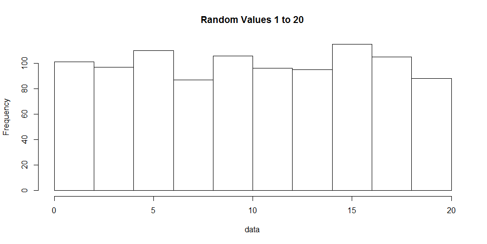

Quick Stats - Descriptive Statistics Part 3 - Mode
Introduction
In this quick post covering descriptive statistics we will cover the mode. The mode describes the frequency of values within a given data set. To learn about the median or mean, please click the respective links.
Mode
The mode is one of the easiest descriptive statistics to understand. It simply provides the value(s) that occur(s) most frequently. In most cases it is not very informative to identify a single value that occurs frequently, however it is useful to find the number of occurences for many values. To do this we can make use of a histogram to display the data.
Lets generate 1,000 numbers in the range of 1 to 20 and visualize it. The code to do this in R follows:
data <- sample(1:20, 1000, replace=T)
hist(data, main="Random Values 1 to 20")
In the code sample above we generated the numbers and created a histogram of the data. A histogram, shown below, displays the number of occurrences for each value observed in our data set.

R
Unfortunately, there is not a single function to obtain the mode of a given data set. However, we can create a table for the number of occurrences or visualize the data with a histogram.
data <- c(1, 1, 2, 3, 3, 3, 4, 5, 5, 5, 5, 5)
table(data)
Python
In the Scipy module we can obtain the mode only.
from scipy import stats
data = [1, 1, 2, 3, 3, 3, 4, 5, 5, 5, 5, 5]
stats.mode(data)
We can also use Scipy to reproduce a frequency table.
from scipy import stats
data = [1, 1, 2, 3, 3, 3, 4, 5, 5, 5, 5, 5]
stats.itemfreq(data)
Conclusion
The mode is one of the most under used descriptive values of a data set. It simply provides you with what value occurs most frequently. In some instances it might be nice to know, but less useful than the median or mean. R does not provide a built in method for finding the mode by itself, however Python's Scipy module provides both frequencys of all values or simply the mode.
In the next post we will look at some real world applications of the mean, median and mode.